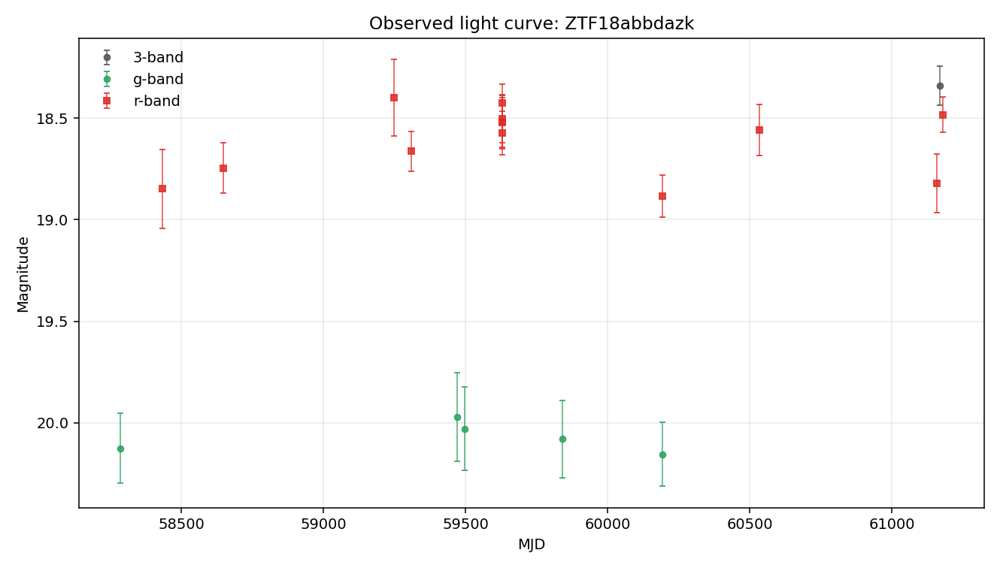
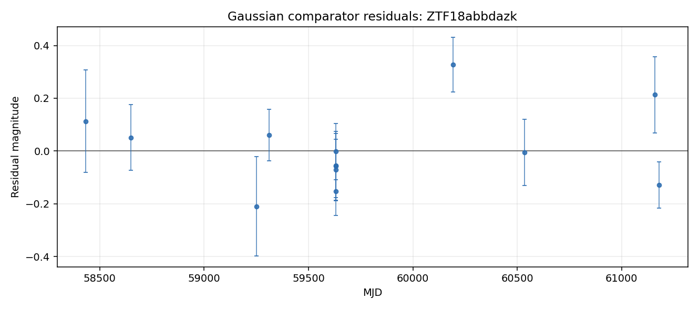

Static evidence report generated from the local case-file JSON.
Evidence Narrative
Mixed evidence with cautious interpretation
The Gaussian bump comparator fit, but reduced chi-squared is 2.2, so the single smooth bump captures only part of the point-to-point behavior. The variability texture comparator found changes that are comparable to the reported photometric errors. Together, these suggest the r-band detections are not fully captured by one smooth bump.
Evidence Sections
Baseline transient-shape checknot_well_fit
The Gaussian bump comparator fit the detections but left substantial residual structure (reduced chi-squared about 2.2).
Variability texturemeasurement_level
The measured changes are comparable to reported photometric errors.
Standard feature summarycomputed
Descriptive light-curve features were computed from 13 usable r-band point(s) for comparison across objects.
Template-family probelimited
Template-family probing was limited because required context such as redshift is unavailable.
Cross-survey contextnot_requested
External catalog context was not requested for this case-file run.
What Argus Can Say
The r-band detections are not well explained by a single smooth bump.
Standard descriptive features are available for comparison across objects.
No spectroscopic information is recorded in this case file.
What Argus Cannot Say
Argus does not identify the object type.
Argus does not certify that the source is unusual.
Argus does not treat broker or catalog labels as ground truth.
Argus does not treat template-family probes as object identity.
Recommended Next Checks
Inspect residual structure visually.
Add verified redshift or context before interpreting template-family probes.
Run cross-survey context if network access and optional dependencies are available.
Inspect forced photometry around recent detections if available.
Caveat: This narrative summarizes evidence layers. It is not a physical classification.
Visual Summary

Observed light curve

Gaussian comparator residuals show where the simple bump model under- or over-predicts the observed magnitudes.
No broker or catalog classification metadata is attached.
Any external labels shown here are metadata only, not Argus conclusions.
Light-Curve Summary
Detections
19
Non-detections
201
Filters observed
g, r
First MJD
58283.4
Last MJD
61180.4
Time span days
2897.04
Most recent detection MJD
61180.4
Longest detection gap days
623.14
Per-Filter Summary
Filter
Detections
Non-detections
Mag min
Mag max
Delta mag
g
5
82
19.9722
20.156
0.183842
r
13
98
18.3986
18.8844
0.485804
Feature Summary
Source
light-curve
Band
r
Status
computed
Usable points
13
Feature Values
amplitude
0.242902
inter_percentile_range_25
0.26614
maximum_slope
37.6421
median
18.5573
median_absolute_deviation
0.104815
standard_deviation
0.16469
Feature Quality Notes
maximum_slope is cadence-sensitive: the steepest adjacent pair is separated by 3.6 minute(s). Treat this as a sampling diagnostic, not a robust physical rate.
Minimum adjacent detection spacing is 3.6 minute(s).
Feature Diagnostics
cadence_sensitive_maximum_slope
True
cadence_sensitive_slope_threshold_days
0.05
maximum_slope_pair_delta_mag
0.094542
maximum_slope_pair_delta_time_days
0.0025116
maximum_slope_pair_delta_time_minutes
3.6167
maximum_slope_pair_value_mag_per_day
37.6421
minimum_delta_time_days
0.0025116
minimum_delta_time_minutes
3.6167
Interpretation
Descriptive light-curve features were computed for r-band detections using the light-curve package. The r-band observed brightness range is moderate (0.49 mag). Standardized scatter is moderate for this detection set (0.16 mag). These features support comparison across objects. The maximum_slope value is cadence-sensitive for this object and should be read with the feature quality notes.
Caveat
Feature values are descriptive summaries only and do not identify the object type.
Evidence Triage Assessment
anomaly_assessment is an evidence triage summary inside this case file. It summarizes available signals for review; it is not an object-identity claim.
Status
available
Score
8
Label
high
Drivers
19 detections provide a usable local record.
Coverage spans 2897 days, enough to inspect long-baseline behavior.
Both g and r observations are present for cross-band review.
The largest observed per-band magnitude range is moderate (0.49 mag).
Median g/r magnitudes differ enough to merit cross-band inspection (1.52 mag).
Standard descriptive light-curve features were computed.
Gaussian bump fit leaves elevated residual structure (reduced chi-squared about 2.2).
Tensor mask diagnostics are available (89% bins masked).
Cautions
maximum_slope is cadence-sensitive: the steepest adjacent pair is separated by 3.6 minute(s). Treat this as a sampling diagnostic, not a robust physical rate.
Minimum adjacent detection spacing is 3.6 minute(s).
Template-family probe is limited: missing_required_context.
Catalog-context status is not_requested; external context remains limited.
This deterministic assessment supports review triage only. It is not a classification, model verdict, or claim about physical identity.
Caveat: This deterministic assessment supports review triage only. It is not a classification, model verdict, or claim about physical identity.
Comparison Summary
Single smooth bump leaves residual structure
The Gaussian bump comparator fit, but reduced chi-squared is 2.2, so the single smooth bump captures only part of the point-to-point behavior. The variability texture comparator found changes that are comparable to the reported photometric errors. Together, these suggest the r-band detections are not fully captured by one smooth bump.
Caveat
This is not a physical classification. It does not identify the object type, physical cause, or special status.
Recommended next check
Inspect the largest residuals and review cadence gaps before adding richer comparators.
Model Comparisons
Gaussian bump (r-band)
Model type
gaussian_bump
Filter used
r
Status
fitted_baseline
Parameters
amplitude_mag
-857.877
baseline_mag
876.434
peak_mjd
60200.9
sigma_days
86854.9
Fit Metrics
largest_abs_residual
0.327377
largest_residual_mjd
60193.3
mae
0.111401
n_points
13
reduced_chi2
2.2375
residual_mean
0.00625633
residual_std
0.143152
rmse
0.143288
Residual Summary
No striking residual structure relative to the fit.
Interpretation
A single Gaussian bump was fit to the r-band detections. RMSE = 0.14 mag, reduced χ² ≈ 2.2 — the bump shape captures the average behavior but not the point-to-point variability. See residual_summary for where the fit fails.
After 3-point smoothing, counted 3 local extrema/sign change(s).
Robust scatter is comparable to the reported errors.
Interpretation
The r-band detections (13 point(s)) span 0.49 mag with robust scatter 0.16 mag. After 3-point smoothing, 3 local extrema/sign change(s) were counted. The scatter is comparable to the reported photometric errors. The measured changes are small relative to the reported errors, so this check treats the sequence as measurement-level or nearly flat. This is descriptive only: it does not identify an object type, physical cause, or special status.
sncosmo template probe
Model type
sncosmo_template_probe
Filter used
g,r
Status
missing_required_context
Parameters
None recorded.
Fit Metrics
bands_used
["g", "r"]
magnitude_system
ab
missing_context
["redshift"]
model_family
sncosmo_template_family
n_points
18
template_name
hsiao
zeropoint
25
Residual Summary
Redshift is unavailable in the local case-file context.
Interpretation
sncosmo template fitting was not attempted because redshift is unavailable. Argus does not invent redshift for template-family comparisons.
Cross-Survey Context
Status
not_requested
Coordinates
Not available.
Search radius arcsec
Not available.
Sources
No catalog sources recorded.
Interpretation
Cross-survey catalog context was not requested for this run.
Caveat
No external catalog query was performed.
Uncertainty and Recommended Next Checks
Evidence Notes
Object has 19 rb-filtered detection(s) and 201 non-detection(s) on file.
Filters observed: g, r.
Coverage spans MJD 58283.40 to 61180.44 (2897 days).
Most recent detection: MJD 61180.44.
Longest gap between consecutive detections: 623 days.
No external classification label is attached to this object in local data.
Uncertainty Notes
Cross-survey catalog context is tracked in the cross_survey_context field; default offline runs record not_requested unless the optional lookup is explicitly enabled.
No spectroscopic information is on file.
No forced-photometry follow-up has been requested.
Candidate explanations above are placeholders, not fits, so mismatch magnitudes and goodness-of-fit values are not yet available.
No external classification label is present in local data.
Recommended Next Checks
Run the optional cross-survey context check at RA=286.62936, Dec=1.94183 if network access and optional dependencies are available.
Inspect archival image cutouts at this position and record any nearby source context as external metadata.
Pull ZTF forced photometry in a plus/minus 90-day window around the most recent detection (MJD 61180.44).
Add richer comparator families only when the required context is available, and record their residuals without treating them as object identity.
If the source is still active (last detection within ~60 days), request follow-up spectroscopy.